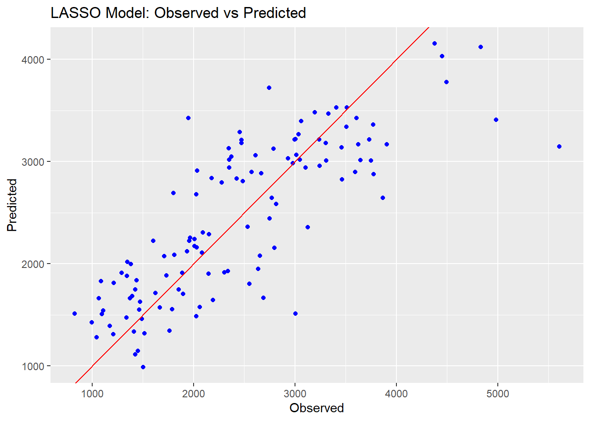

For this exercise, we’ll be practicing some machine learning models using the data from our previous “Fitting exercise”. Much of the base code for this exercise was generated using Microsoft Copilot in Precise Mode; this was then modified to the specifics of our data and to fix errors. We’ll start by loading packages, the data, and creating a random seed for reproducibility.
#Load packageslibrary(tidymodels)
Warning: package 'tidymodels' was built under R version 4.3.2
Warning: package 'dials' was built under R version 4.3.2
Warning: package 'scales' was built under R version 4.3.2
Warning: package 'ggplot2' was built under R version 4.3.3
Warning: package 'infer' was built under R version 4.3.2
Warning: package 'modeldata' was built under R version 4.3.2
Warning: package 'parsnip' was built under R version 4.3.2
Warning: package 'rsample' was built under R version 4.3.2
Warning: package 'tune' was built under R version 4.3.2
Warning: package 'workflows' was built under R version 4.3.2
Warning: package 'workflowsets' was built under R version 4.3.2
── Conflicts ───────────────────────────────────────── tidymodels_conflicts() ──
✖ purrr::discard() masks scales::discard()
✖ dplyr::filter() masks stats::filter()
✖ dplyr::lag() masks stats::lag()
✖ recipes::step() masks stats::step()
• Learn how to get started at https://www.tidymodels.org/start/
library(ggplot2)library(here)
Warning: package 'here' was built under R version 4.3.2
here() starts at D:/MADA/kevinkosewick-MADA-portfolio
library(dplyr)library(corrplot)
Warning: package 'corrplot' was built under R version 4.3.3
corrplot 0.92 loaded
library(glmnet)
Warning: package 'glmnet' was built under R version 4.3.3
Loading required package: Matrix
Attaching package: 'Matrix'
The following objects are masked from 'package:tidyr':
expand, pack, unpack
Loaded glmnet 4.1-8
library(ranger)
Warning: package 'ranger' was built under R version 4.3.3
library(tune)library(dials)#Load the datamldata<-readRDS(here("ml-models-exercise", "modelfitting.rds"))#seed settingrngseed=1234
Now we’ll do some data processing. We’ll combine the “7” and “88” categories for our RACE variable into a new category, “3”.
# Change 7 and 88 to 3.# Convert RACE to numericmldata$RACE <-as.numeric(as.character(mldata$RACE))# Perform the replacementmldata <- mldata %>%mutate(RACE =case_when( RACE %in%c(7, 88) ~3,TRUE~ RACE ))# Convert RACE back to factormldata$RACE <-as.factor(mldata$RACE)#Double check to make sure everything is the class we want itclass(mldata$RACE)
[1] "factor"
Now we’ll make a pairwise correlation plot for our continuous variables to make sure we don’t have too much collinearity between variables.
Nothing seems to correlated (absolute value of 0.9+), so we can continue with our modelling. We’ll first create a new variable for Body Mass Index (BMI) using the values in our HT and WT columns.
# Compute BMI from our height and weight data (assumed to be in meters and kg. based off of the values)mldata$BMI <- mldata$WT / (mldata$HT^2)
With all of our cleaning done, we can now proceed to fitting. We’ll do 3 models: a GLM with all predictors, a LASSO model, and a random forest model. We’ll use the tidymodels framework for all of these.
# Set seed for reproducibilityset.seed(rngseed)# Define the outcome and predictorsoutcome <-"Y"predictors <-setdiff(names(mldata), outcome)# Create a reciperecipe <-recipe(formula = Y ~ ., data = mldata) %>%step_dummy(all_nominal(), -all_outcomes()) %>%step_normalize(all_predictors())# Define the models# 1. Linear Modelall_model <-linear_reg() %>%set_engine("lm") %>%set_mode("regression")# 2. LASSO Modellasso_model <-linear_reg(penalty =0.1, mixture =1) %>%set_engine("glmnet") %>%set_mode("regression")# 3. Random Forest Modelrf_model <-rand_forest() %>%set_engine("ranger", seed = rngseed) %>%set_mode("regression")# Create workflowsall_workflow <-workflow() %>%add_model(all_model) %>%add_recipe(recipe)lasso_workflow <-workflow() %>%add_model(lasso_model) %>%add_recipe(recipe)rf_workflow <-workflow() %>%add_model(rf_model) %>%add_recipe(recipe)# Fit the modelsall_fit <- all_workflow %>%fit(data = mldata)lasso_fit <- lasso_workflow %>%fit(data = mldata)rf_fit <- rf_workflow %>%fit(data = mldata)
Now that we’ve fit the models, we can begin to evaluate their performance. We’ll use RMSE as the metric and create some plots.
#get RMSE of modelsall_rmse<- aug_all %>%rmse(truth = Y, .pred)lasso_rmse <- aug_lasso %>%rmse(truth = Y, .pred)rf_rmse <- aug_rf %>%rmse(truth = Y, .pred)# Print RMSEprint(paste("Linear Model RMSE: ", all_rmse))
[1] "Linear Model RMSE: rmse"
[2] "Linear Model RMSE: standard"
[3] "Linear Model RMSE: 571.595397430179"
print(paste("LASSO Model RMSE: ", lasso_rmse))
[1] "LASSO Model RMSE: rmse" "LASSO Model RMSE: standard"
[3] "LASSO Model RMSE: 571.650382196397"
print(paste("Random Forest Model RMSE: ", rf_rmse))
[1] "Random Forest Model RMSE: rmse"
[2] "Random Forest Model RMSE: standard"
[3] "Random Forest Model RMSE: 381.596767379991"
# Create observed vs predicted plotsggplot() +geom_point(aes(x = mldata$Y, y = all_preds$.pred), color ="blue") +geom_abline(intercept =0, slope =1, color ="red") +ggtitle("Linear Model: Observed vs Predicted") +xlab("Observed") +ylab("Predicted")
ggplot() +geom_point(aes(x = mldata$Y, y = lasso_preds$.pred), color ="blue") +geom_abline(intercept =0, slope =1, color ="red") +ggtitle("LASSO Model: Observed vs Predicted") +xlab("Observed") +ylab("Predicted")

ggplot() +geom_point(aes(x = mldata$Y, y = rf_preds$.pred), color ="blue") +geom_abline(intercept =0, slope =1, color ="red") +ggtitle("Random Forest Model: Observed vs Predicted") +xlab("Observed") +ylab("Predicted")
We can see that the Random Forest model performs a lot better on the RMSE metric than the other two models. The prediction points are also closer to the line on the observed vs predicted plots, indicating a better fit overall. The linear and LASSO models are very similar to each other; this is likely because we set the tuning paramter so low for our LASSO, resulting in very little change from a typical linear model.
We’ll now practice tuning our complex models (LASSO and RF). We’ll start with LASSO. Note that this tuning is being done with the data used to train the model; this is a poor choice in a real analysis and is only being done now for practice purposes.
# Define the grid of parameterspenalty_values <-10^seq(-5, 2, length.out =50)penalty_grid <-tibble(penalty = penalty_values)# Update the LASSO model specification to include the penalty parameterlasso_model <-linear_reg(penalty =tune(), mixture =1) %>%set_engine("glmnet") %>%set_mode("regression")# Update the LASSO workflow to include the updated model specificationlasso_workflow <-workflow() %>%add_model(lasso_model) %>%add_recipe(recipe)# Create resamples using the apparent() functionresamples <-apparent(mldata)# Tune the LASSO modeltune_results <-tune_grid( lasso_workflow,resamples = resamples,grid = penalty_grid)# Print the tuning resultsprint(tune_results)
We can see that as our penalty parameter increases, the RMSE in our LASSO model also increases. Low penalty values hover at the same RMSE as our linear model; this could indicate that we have no overfitting in our model or that all predictors are relevant. However, we know that we’re tuning our model with the same data we used to fit it, so these results are misleading since we aren’t actually able to test our model with new data. Now we’ll tune our RF model.
# Update the Random Forest model specification to include the mtry and min_n parametersrf_model <-rand_forest(mtry =tune(), min_n =tune(), trees =300) %>%set_engine("ranger", seed = rngseed) %>%set_mode("regression")# Update the Random Forest workflow to include the updated model specificationrf_workflow <-workflow() %>%add_model(rf_model) %>%add_recipe(recipe)# Define the grid of parametersmtry_param <-mtry(range =c(1, 7))min_n_param <-min_n(range =c(1, 21))rf_grid <-grid_regular(mtry_param, min_n_param, levels =7)# Tune the Random Forest modeltune_results <-tune_grid( rf_workflow,resamples = resamples,grid = rf_grid)# Print the tuning resultsprint(tune_results)
It seems that a higher value of mtry and a lower value of min_n lead to the best results. We’ll move on for now to using CV then actually tuning the data to “new” observations.
#set the seed againset.seed(rngseed)# Create real resamples using 5-fold cross-validation, 5 times repeatedresamples <-vfold_cv(mldata, v =5, repeats =5)# Define the grid of parameters for LASSOpenalty_values <-10^seq(-5, 2, length.out =50)penalty_grid <-tibble(penalty = penalty_values)# Tune the LASSO modeltune_results_lasso <-tune_grid( lasso_workflow,resamples = resamples,grid = penalty_grid)# Print the tuning results for LASSOprint(tune_results_lasso)
# Plot the tuning results for LASSOautoplot(tune_results_lasso)
# Define the grid of parameters for Random Forestrf_param_grid <-grid_regular(mtry(range =c(1, 7)),min_n(range =c(1, 21)),levels =7)# Tune the Random Forest modeltune_results_rf <-tune_grid( rf_workflow,resamples = resamples,grid = rf_param_grid)# Print the tuning results for Random Forestprint(tune_results_rf)
# Plot the tuning results for Random Forestautoplot(tune_results_rf)
The LASSO still does best for a small penalty, the RMSE for both models went up, and the LASSO now has lower RMSE compared to the RF. CV provides a more robust estimate of model performance by averaging the performance across multiple folds. This often results in a higher RMSE compared to a single model fit on the entire dataset. This could explain why the RMSE for both models went up when using CV. When the penalty is small, LASSO includes more features in the model, making it more flexible and potentially leading to lower RMSE. This could explain why LASSO still does best for a small penalty. LASSO is a linear model, which may be less complex than a Random Forest depending on the number of features selected. If the true relationship is linear/nearly linear, LASSO may outperform a Random Forest, which could explain why LASSO now has a lower RMSE compared to the Random Forest. Based off of these findings, it would seem that the LASSO model explains more variation (higher R squared value) and has a lower RMSE, indicating better performance. I would select this as the better model for our study.